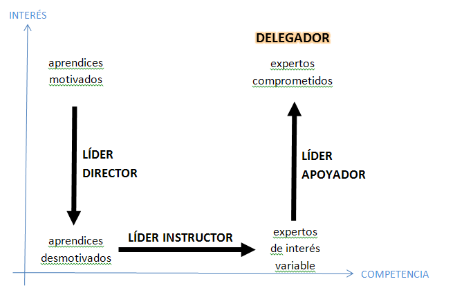
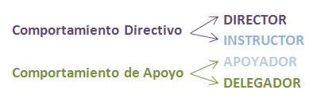

Líder necesario según su colaborador:

-
Comportamiento iniciador:
Estructura el comportamiento
iniciático
, estableciendo las metas, directrices, funciones y responsabilidades, así como
plazos
y la necesidad de cumplirlos sin perder calidad.
